Denodo对接FusionInsight¶
适用场景¶
Denodo Platform 7.0 ↔ FusionInsight HD V100R002C80SPC100 (Hive/Spark2x)
Denodo Platform 7.0 ↔ FusionInsight HD 6.5 (Hive/Spark2x)
准备工作¶
-
下载并安装Denodo Platform 7.0
-
Denodo是一个数据虚拟化系统，允许应用程序使用来自多个异构数据源的数据，并为应用程序提供统一的访问接口。通过分布式数据源实时地访问和集成数据，而不需要从数据源复制或移动数据。应用程序使用在虚拟层中定义的语义组件，独立于存储数据的物理源。
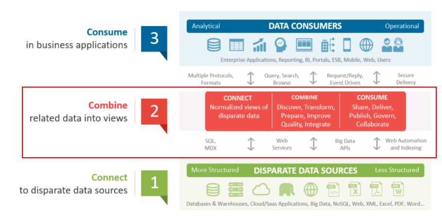
-
从https://community.denodo.com/express/download下载Denodo Platform 7.0的“Denodo Express Installer”和“Denodo Express License”。下载选择版本与操作系统位数保持一致，本文版本是Windows 64 bits。
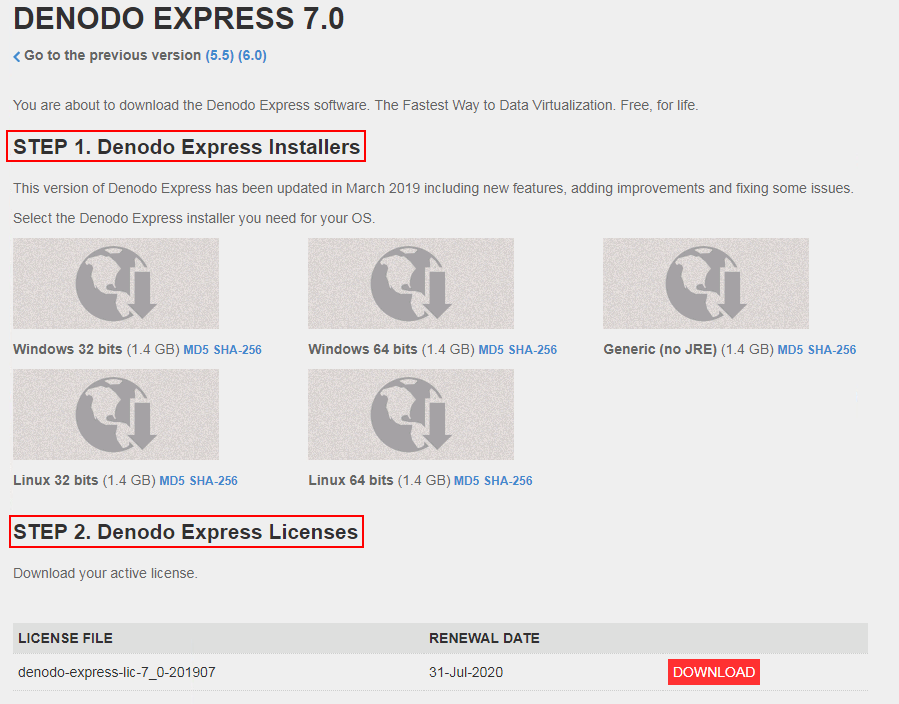
-
下载完成后安装于本地
C:\Denodo\。 -
FusionInsight HD相关配置（已完成FusionInsight HD的安装）
-
登录FusionInsight Manager创建一个“人机”用户，例如：developuser，具体请参见《FusionInsight HD 管理员指南》的
系统设置->权限设置->用户管理->创建用户章节。给developuser用户授予Hive和Spark2x的所有访问权限。 -
登录FusionInsight Manager的
系统->用户->更多（developuser）->下载认证凭证，下载developuser对应的认证凭证。解压后，将user.keytab放在C:\developuser\目录下(developuser文件夹不存在则创建)，将krb5.conf文件重命名为krb5.ini，并放在C:\Windows\目录下。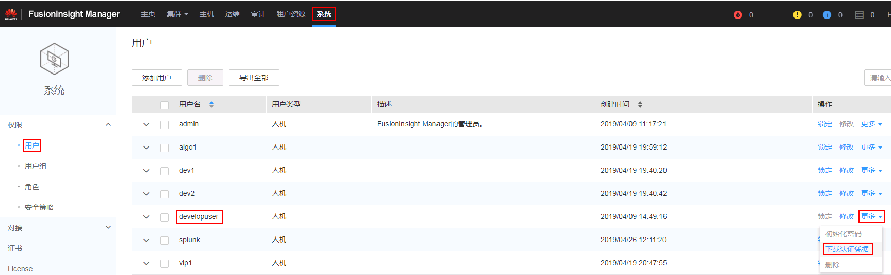
-
登录FusionInsight Manager
主机->更多->下载客户端，下载FusionInsight HD客户端到本地。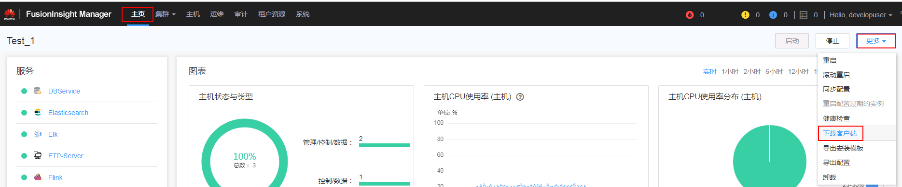
- 对接Hive需要准备的jar包
将解压后的客户端
..\FusionInsight_Services_Client\FusionInsight_Services_ClientConfig\Hive\jdbc\目录下所有jar包拷贝至C:\Denodo\DenodoPlatform7.0\extensions\thirdparty\lib\hive\，如果hive文件夹不存在则创建。- 对接Spark2x需要准备的jar包
将解压后的客户端
..\FusionInsight_Services_Client\FusionInsight_Services_ClientConfig\Spark2x\jdbc\目录下所有jar包拷贝至C:\Denodo\DenodoPlatform7.0\extensions\thirdparty\lib\spark2x\，如果spark2x文件夹不存在则创建。如果是FusionInsight HD 6.5.X版本，还需要将
..\FusionInsight_Services_Client\FusionInsight_Services_ClientConfig\Spark2x\FusionInsight-Spark2x-2.3.2.tar.gz\spark\jars\woodstox-core-5.0.3.jar拷贝至C:\Denodo\DenodoPlatform7.0\extensions\thirdparty\lib\spark2x\。如果是FusionInsight HD V100R002C80SPC100版本，则不需要。 -
准备数据
-
Hive数据库已存在表student，数据类似于：
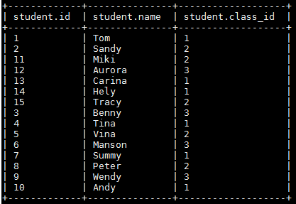
示例如下：
CREATE TABLE IF NOT EXISTS student(id INT, name STRING, class_id INT); INSERT INTO student VALUES (1,'Tom',1); INSERT INTO student VALUES (2,'Sandy',2); INSERT INTO student VALUES (3,'Benny',3); INSERT INTO student VALUES (4,'Tina',1); INSERT INTO student VALUES (5,'Vina',2); INSERT INTO student VALUES (6,'Manson',3); INSERT INTO student VALUES (7,'Summy',1); INSERT INTO student VALUES (8,'Peter',2); INSERT INTO student VALUES (9,'Wendy',3); INSERT INTO student VALUES (10,'Andy',1); INSERT INTO student VALUES (11,'Miki',2); INSERT INTO student VALUES (12,'Aurora',3); INSERT INTO student VALUES (13,'Carina',1); INSERT INTO student VALUES (14,'Hely',1); INSERT INTO student VALUES (15,'Tracy',2); -
创建与student.class_id相关的数据存放于excel表中。例如创建
C:\developuser\Class.xlsx，sheet命名为“Class”，包含两列，分别是id和name，id列的取值必须存在于student.class_id中。
-
JDBC连接需要查询Zookeeper，Zookeeper的Kerberos认证需要指定jaas配置文件。创建连接Zookeeper的jaas配置文件（如
C:\developuser\jaas.conf），内容格式如下：Client { com.sun.security.auth.module.Krb5LoginModule required useKeyTab=true keyTab="c:/developuser/user.keytab" principal="developuser@HADOOP.COM" useTicketCache=false storeKey=true debug=true; };
启动并配置Denodo¶
- 点击
开始->Denodo Platform->Denodo Platform 7.0启动Denodo Platform Control Center。
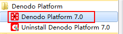
-
配置并启动Virtual DataPort Server。
-
点击
Virtual DataPort->Configure。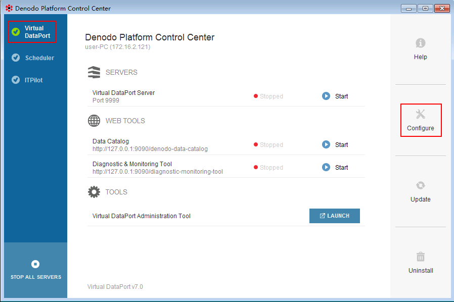
-
点击
JVM Options。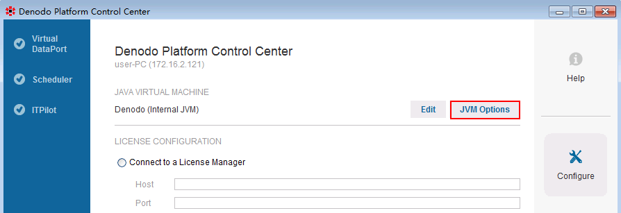
-
Virtual DataPort Server新增
-Djava.security.auth.login.config=c:/developuser/jaas.conf，两个Options之间用空格隔开。点击Ok。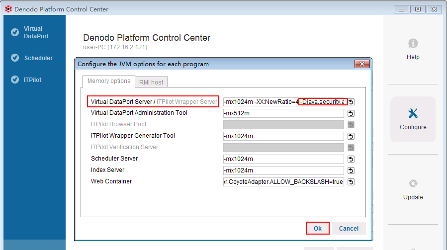
-
点击
Virtual DataPort返回主界面，点击Start启动Virtual DataPort Server。
-
启动Virtual DataPort Administration Tool。
-
Virtual DataPort Server启动成功后状态显示为Running，点击
LAUNCH启动Virtual DataPort Administration Tool。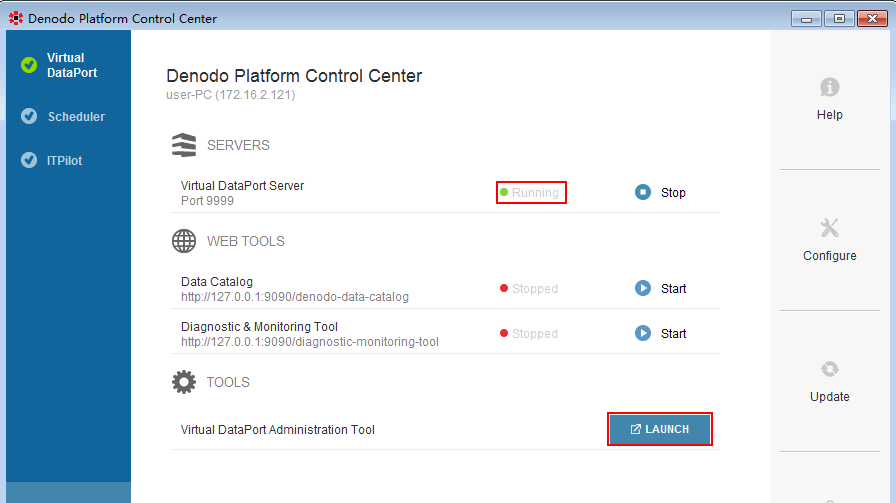
-
输入默认的用户名
admin和密码admin，点击Connect登录。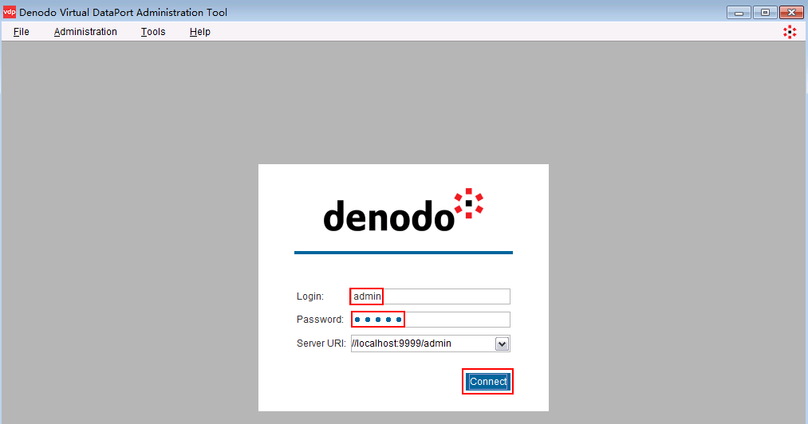
-
成功登录Virtual DataPort Administration Tool。

对接Hive或者Spark2x¶
创建JDBC连接的Data source¶
- 右键
admin->Big Data选择New->Data source->JDBC。
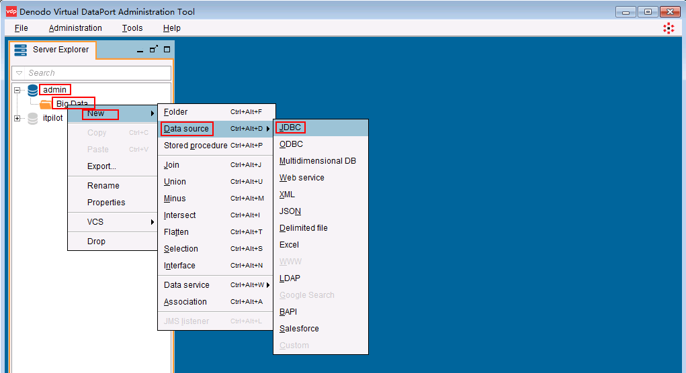
- 配置连接信息：
Name：自命名的新建的Data Source名称。
Driver class path：Hive或者Spark2x的Jar包所在的位置。具体配置路径参考本文准备工作->已完成FusionInsight HD的安装章节。
Database URI：Hive或者Spark2x连接的URL。
Authentication：选择Kerberos认证。
对接Hive具体配置信息如下：
Name: hive_ds
Database adapter: Hive 2.0.0(HiveServer2)
Dirver class path: 'C:\Denodo\DenodoPlatform7.0\extensions\thirdparty\lib\hive'
Dirver class: org.apache.hive.jdbc.HiveDriver
Database URI: jdbc:hive2://172.16.4.21:24002,172.16.4.22:24002,172.16.4.23:24002/;serviceDiscoveryMode=zooKeeper;zooKeeperNamespace=hiveserver2;sasl.qop=auth-conf;auth=KERBEROS;principal=hive/hadoop.hadoop.com@HADOOP.COM;user.principal=developuser;user.keytab=C:/developuser/user.keytab
Transaction Isolation: Database default
Authentication: Use Kerberos
Kerberos login: deverlopuser
选择Use Key tab
keytab file: C:/developuser/user.keytab

对接Spark2x具体配置信息如下：
Name: spark2x_ds
Database adapter: Hive 2.0.0(HiveServer2)
Dirver class path: 'C:\Denodo\DenodoPlatform7.0\extensions\thirdparty\lib\spark2x'
Dirver class: org.apache.hive.jdbc.HiveDriver
Database URI: jdbc:hive2://172.16.4.21:24002,172.16.4.22:24002,172.16.4.23:24002/;serviceDiscoveryMode=zooKeeper;zooKeeperNamespace=sparkthriftserver2x;saslQop=auth-conf;auth=KERBEROS;principal=spark2x/hadoop.hadoop.com@HADOOP.COM;user.principal=developuser;user.keytab=C:/developuser/user.keytab
Transaction Isolation: Database default
Authentication: Use Kerberos
Kerberos login: deverlopuser
选择Use Key tab
keytab file: C:/developuser/user.keytab

- 点击
Test connection，返回JDBC connection tested successfully。如果返回失败，可在C:\Denodo\DenodoPlatform7.0\logs\vdp\vdp.log查看详细的失败日志。点击Ok关闭成功提示。

- 点击
Save保存hive_ds。
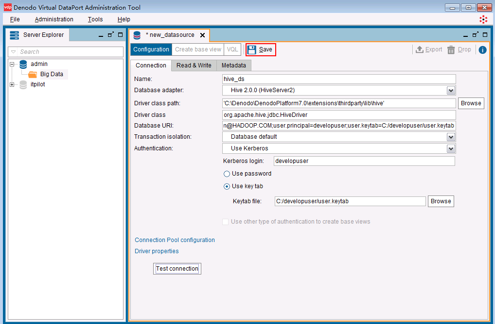
- 保存成功后，左边显示的
admin->Big Data->hive_ds即为新增的Data Source。

创建Hive数据源¶
- 为了更好观察，右键Big Data文件夹
New->Folder新建三个文件夹分别存在Data source(01_data source)、base views(02_base views)、集成数据(03_reports)，并把已创建的data sources移入文件夹01_data source。


- 在左边列表点击选择保存后的Data Source
hive_ds，右边框点击Create base view。选择employee表default->Tables->student，再点击Create selected。
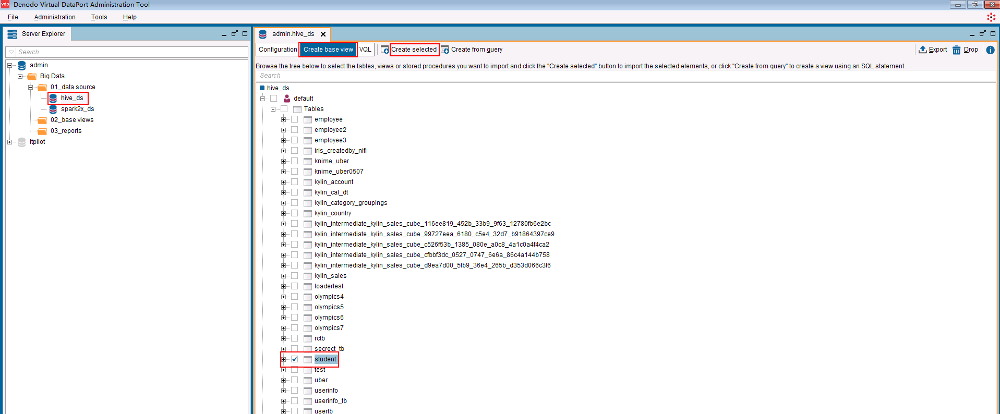
- View name命名为
student，点击 保存。
保存。
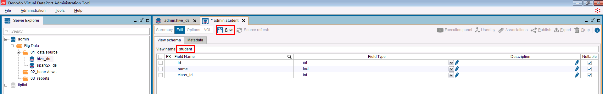
- 在左边列表点击选择保存后的View
student，右边框点击Execution panel->Execute。
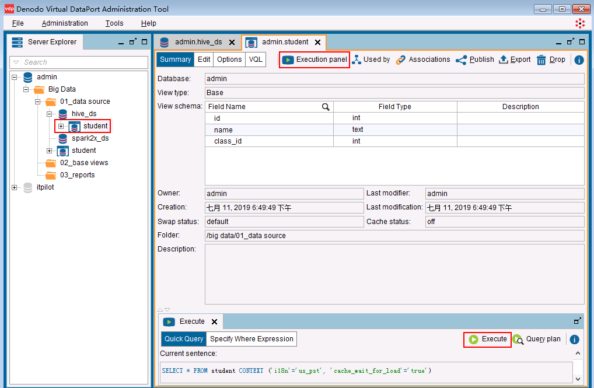
- 等待返回查询结果后，
Query Results->Results，可查看返回的student表的数据。

创建Excel表数据源¶
- 右键文件夹01_data source，选择
New->Data source->Excel。
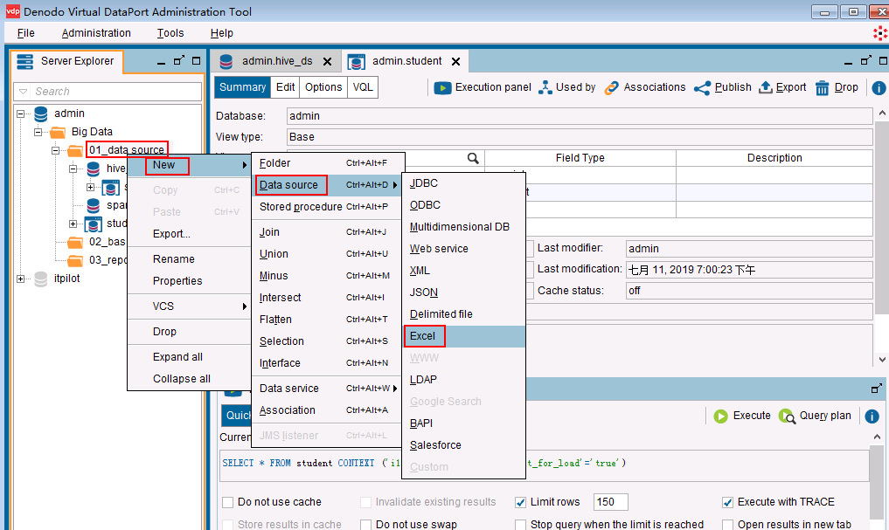
- 选择导入已准备好存放于
C:\developuser\的Class.xlsx。点击保存。
具体输入信息如下：
Name: class
Type of file: 根据准备的Excel表的版本选择
File location: 下拉框选择Local后，再点击Configure选择C:\developuser\Class.xlsx
Worksheets: 输入准备数据对应的Sheet名称Class
Start cell: 准备数据开始的单元格
End cell: 准备数据结束的单元格
Has headers: 勾选
Stream tuples: 勾选
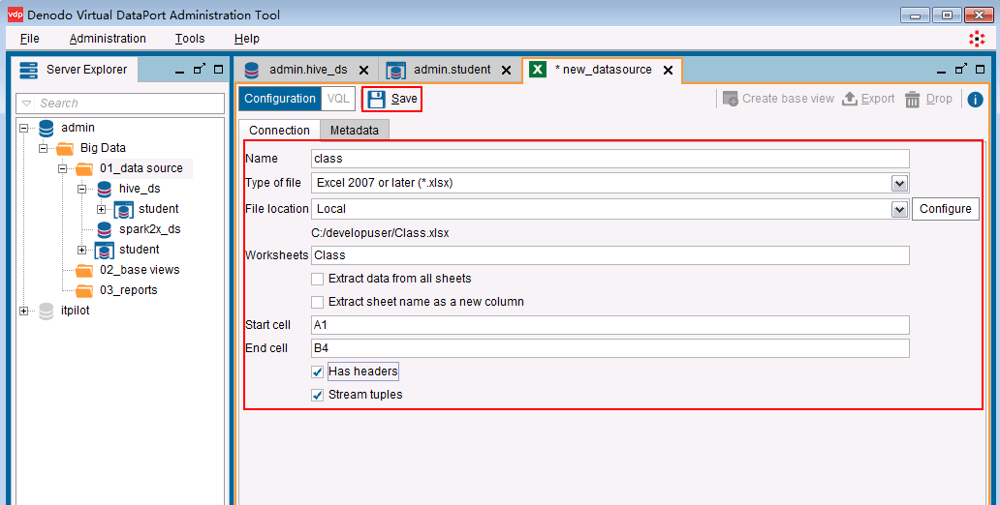
- 选择Data source
class，点击Create base view。
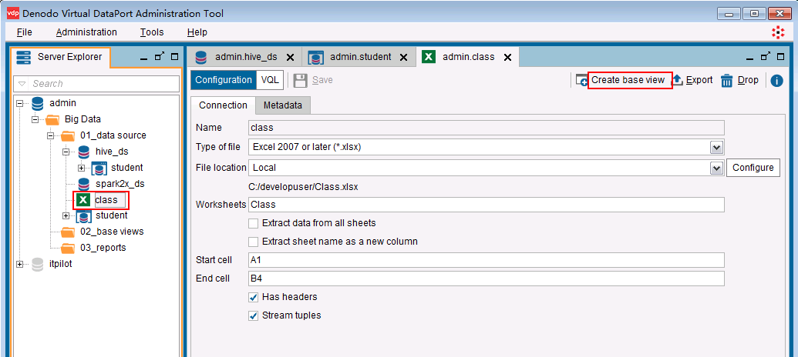
- 点击保存。

- 在左边列表点击选择保存后的View
class，右边框点击Execution panel->Execute。

- 等待返回查询结果后，
Query Results->Results，可查看返回Excel的Class的数据。

- 将View
class和student移入文件夹02_base views。
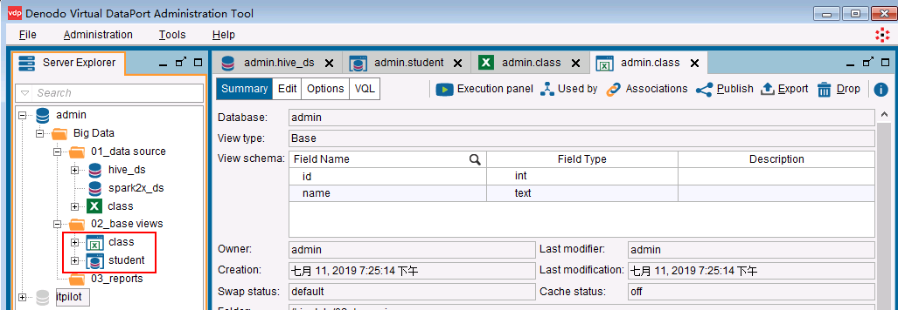
组合Hive和Excel的数据¶
- 右键文件夹03_reports，选择
New->Join。
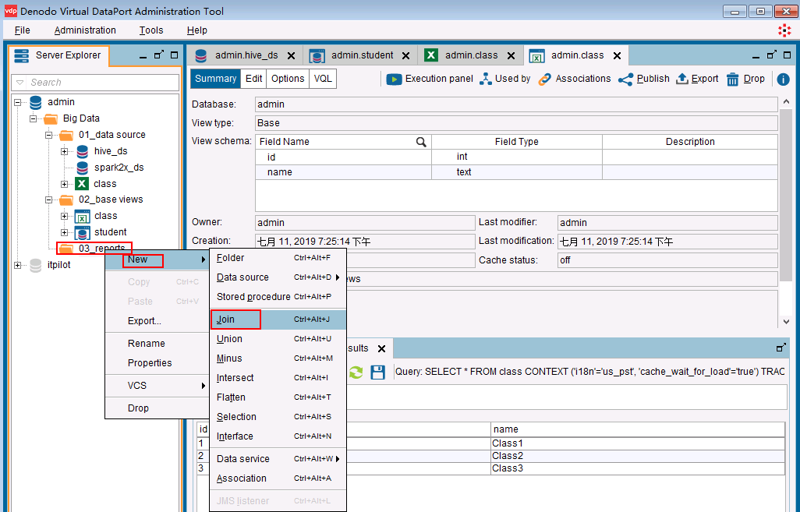
- 分别将文件夹02_base views下的student、class拖至右边编辑框，连接student.class_id和class.id。

- 移至
Output将View name设置为“student_class”，将student的class_id和class的id删除。
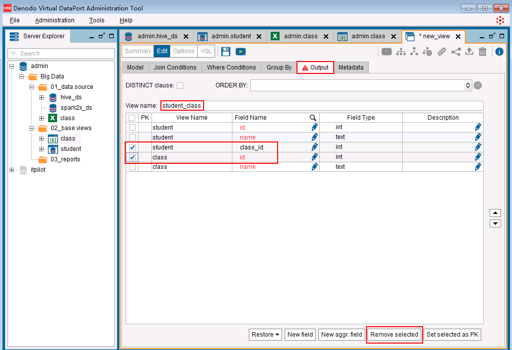
- 重命名class的name为class_name。

- 点击保存。

- 选择
student_class，点击Execution panel->Execute。

- 等待返回查询结果后，
Query Results->Results，可查看返回Hive和Excel组合后的数据。

使用DbVisualizer查看Denodo Views的数据¶
- 从https://www.dbvis.com/download/下载DbVisualizer并安装于本地。
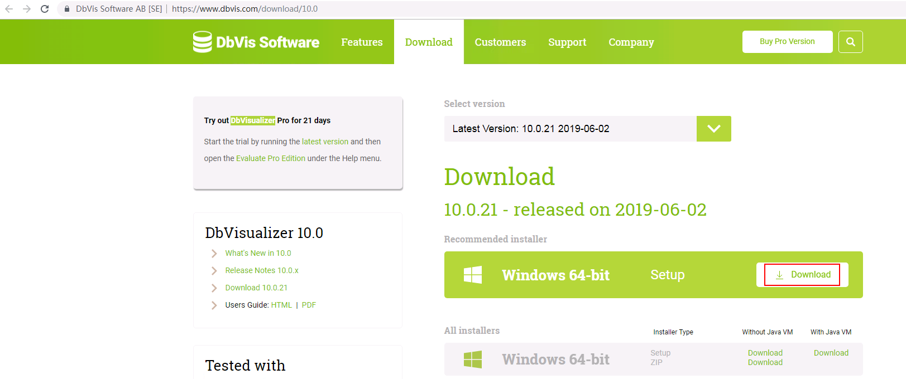
- 打开DbVisualizer，选择
Tools->Driver Manager。

- 选择
Drive->Create Driver。

-
输入以下配置信息后关闭该界面：
Name: Denodo 7.0 URL Format: jdbc:vdb://host:port/database Drive Class: 点击文件夹导入Denodo自带的JDBC jar包，例如C:\Denodo\DenodoPlatform7.0\tools\client-drivers\jdbc\denodo-vdp-jdbcdriver.jar，再在下拉框中选择com.denodo.vdp.jdbc.Driver
-
返回主界面后，选择
Database->Create Database Connection。
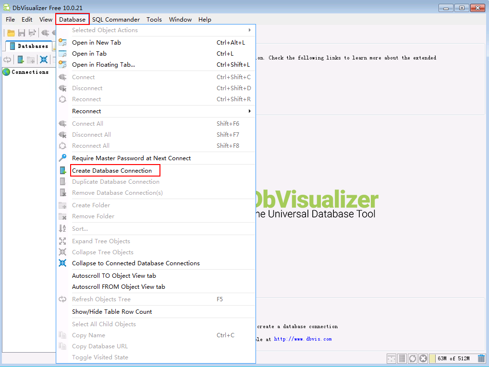
- 选择
Use Wizard。

- 选择
Denodo 7.0，点击Next。

- 输入连接信息后点击
Finish。
连接信息如下：
Database URL: jdbc:vdb://localhost:9999/admin
Database Userid: admin
Database Password: admin
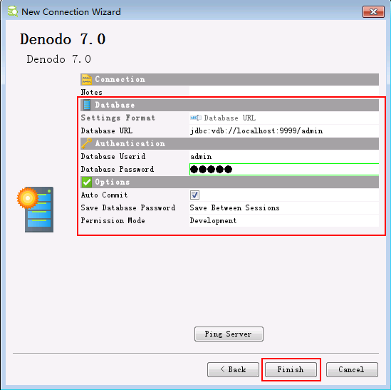
- 连接Denodo默认的admin数据库成功。
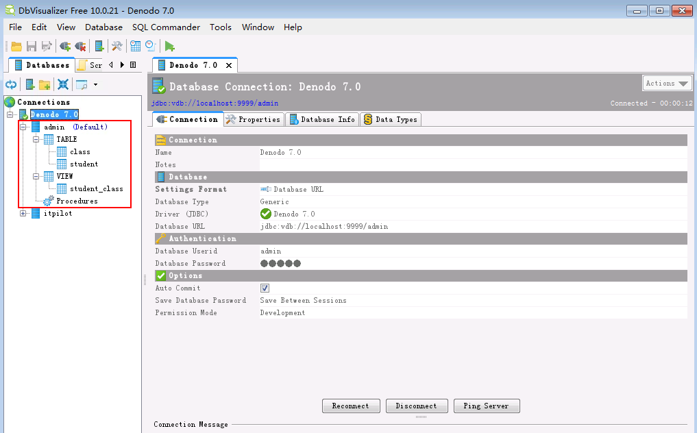
- 双击
VIEW->student_class，选择Open Object。

- 点击
Data查询返回数据正确。

登录RESTful Web service查看Associations¶
-
创建student和class的Association
-
右键文件夹03_reports，选择
New Association。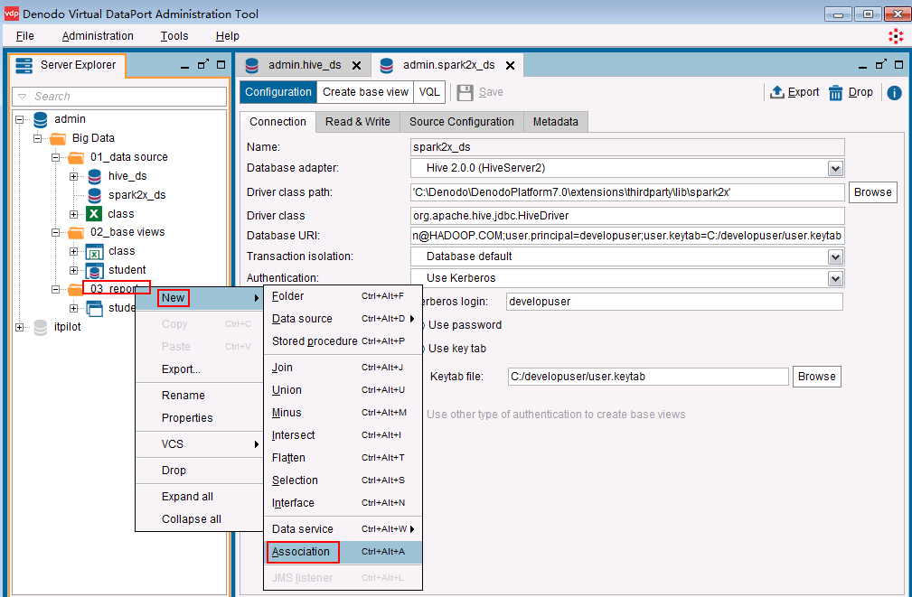
-
分别将文件夹02_base views下的student、class拖至右边编辑框，并连接student.class_id和class.id。
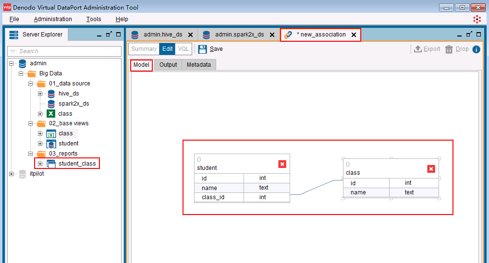
-
移至
Output将“Association name”设置为student_class，“End point 'student'”为Principal且“Role name”为class，“End point 'class'”为Dependent且“Role name”为belongs_to_student。点击保存。
-
保存后可以在文件夹03_reports下面看到Association student_class。
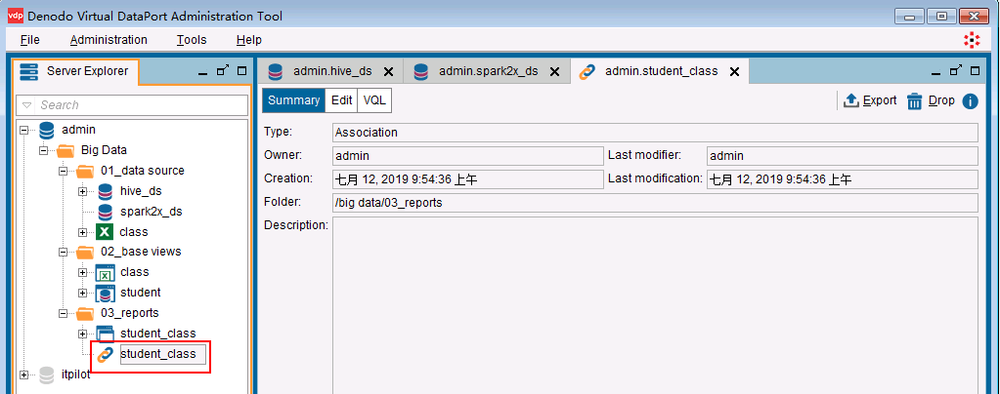
-
登录Denodo的RESTful Web service查看Association student_class
- 登录http://localhost:9090/denodo-restfulws/admin/，用户名为
admin，密码为admin。
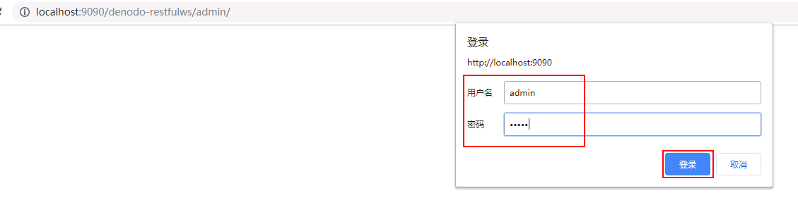
- 点击
class，返回该view的相关信息。

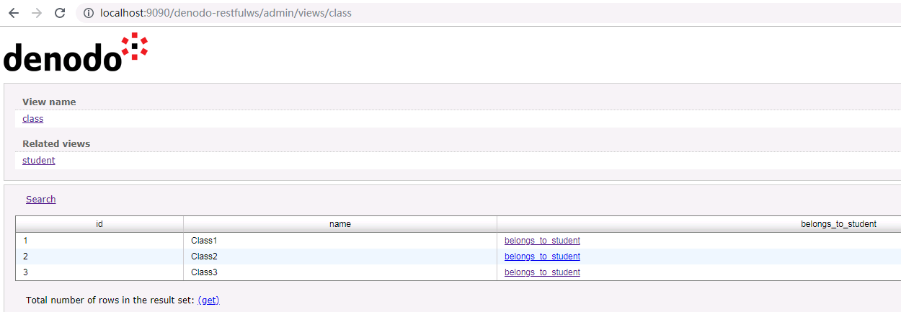
- 点击
belongs_to_student，返回属于该class的所有student。
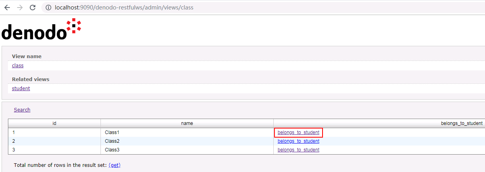

- 登录http://localhost:9090/denodo-restfulws/admin/，用户名为
登录Data Catalog查看Views¶
- 在主界面点击
Denodo Platform Control Center->Virtual DataPort->Start启动Data Catalog服务。

- 状态显示为Running，Data Catalog服务启动成功。
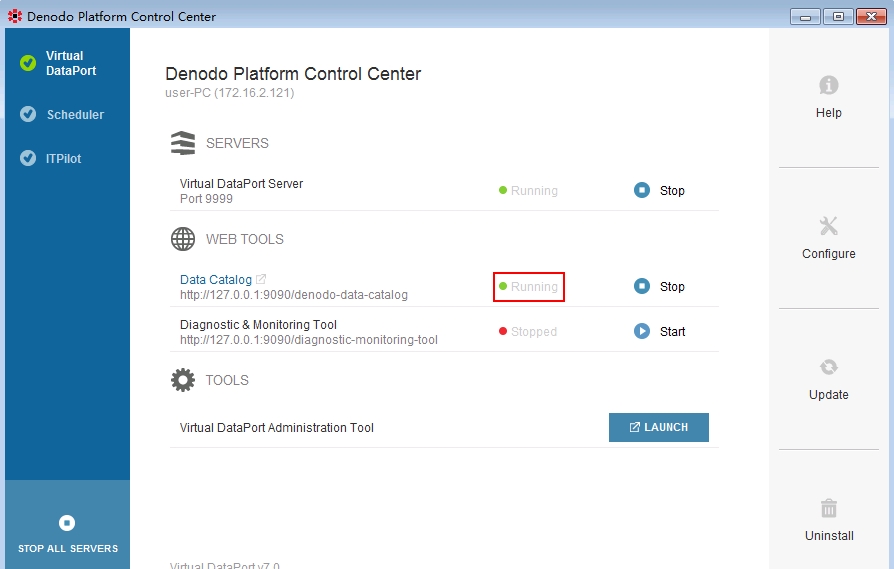
- 使用浏览器访问http://127.0.0.1:9090/denodo-data-catalog，输入默认的用户名
admin和密码admin，点击Sign In登录。

- 选择
Browser->DB/Folders。
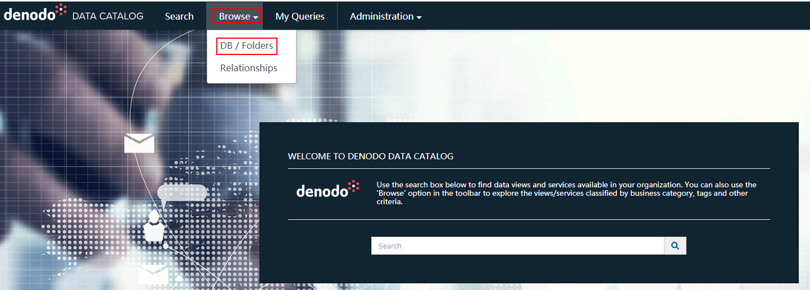
- 选择
admin->Big Data->02_base views->student->Query查询视图student的数据。
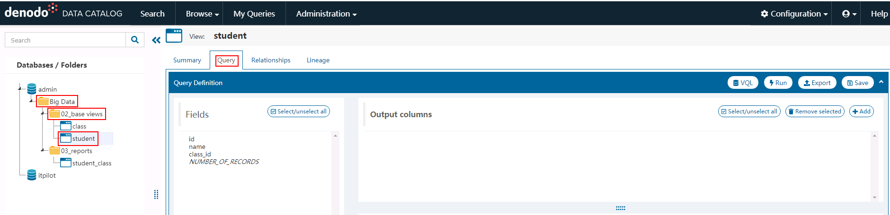
- 点击Output columns的
Add->New Field添加输出列。
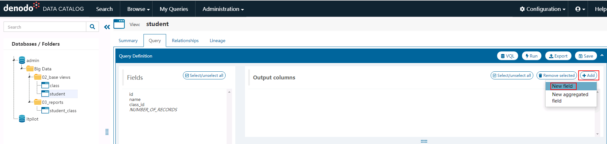
- 输入Name=
id，Expression=id，点击Save。
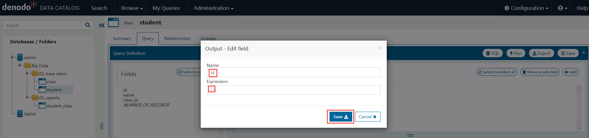
- id列成功保存在Output columns。
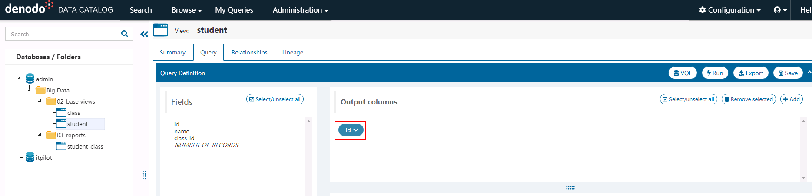
- 采用同样的操作，点击Output columns的
Add->New Field添加其他输出列，例如name。

- 点击
Run查询成功返回student表的id、name、两列的值。
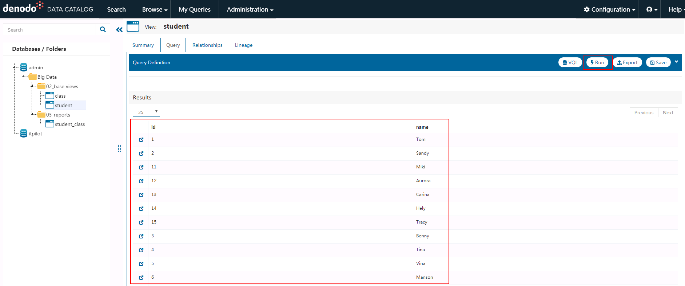
FAQ¶
-
点击
Test connection返回错误Unable to establish connection: javax.security.auth.login.LoginException: KrbException: Cannot locate default realm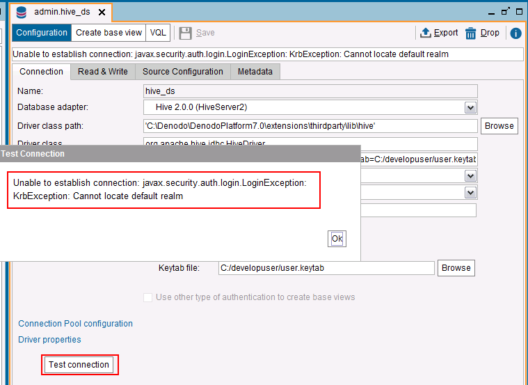
解决办法：
将developuser用户的认证凭证krb5.conf文件重命名为krb5.ini并放在
C:\Windows\目录后，再点击Test connection重试。 -
对接Spar2x时，点击
Test connection返回错误Unable to establish connection: java.lang.SecurityException: class "com.ctc.wstx.io.SystemId"'s signer information does not match signer information of other classes in the same package
解决办法：
检查是否已经将
woodstox-core-5.0.3.jar包拷贝至Drive class path对应的目录，例如将..\FusionInsight_Services_Client\FusionInsight_Services_ClientConfig\Spark2x\FusionInsight-Spark2x-2.3.2.tar.gz\spark\jars\woodstox-core-5.0.3.jar拷贝至C:\Denodo\DenodoPlatform7.0\extensions\thirdparty\lib\spark2x\，再点击Test connection重试。 -
对接Spark2x时，点击
Test connection返回错误Unable to establish connection: java.sql.SQLException: org.apache.hive.jdbc.ZooKeeperHiveClientException: Unable to read HiveServer2 uri from ZooKeeper
解决办法：
- 检查是否已经创建连接Zookeeper的jaas配置文件（如
C:\developuser\jaas.conf），如果没有，则创建，内容格式如下：Client { com.sun.security.auth.module.Krb5LoginModule required useKeyTab=true keyTab="c:/developuser/user.keytab" principal="developuser@HADOOP.COM" useTicketCache=false storeKey=true debug=true; }; - 检查是否已经配置Virtual DataPort Server的JVM Options新增
-Djava.security.auth.login.config=c:/developuser/jaas.conf。如果没有，则先停止Virtual DataPort Server，再在Virtual DataPort Server的JVM Options中新增jaas.conf的配置。详细操作可参考本文的启动并配置Denodo->配置并启动Virtual DataPort Server章节。
- 检查是否已经创建连接Zookeeper的jaas配置文件（如
-
点击
Test connection返回错误Unable to establish connection: javax.security.auth.login.LoginException: Clock skew too great (37) - PREAUTH_FAILED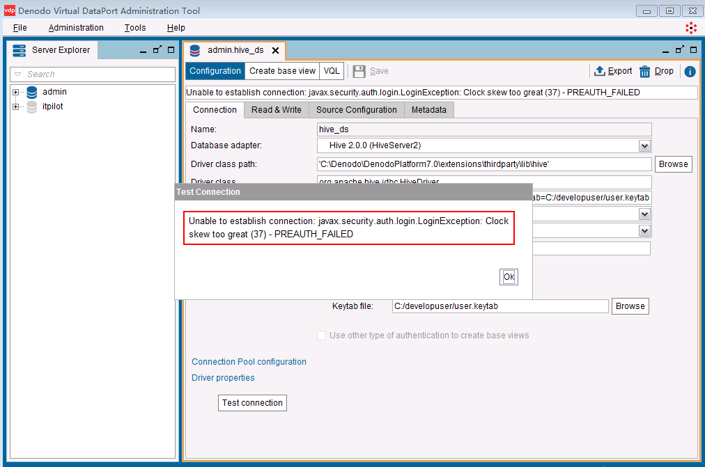
解决办法：
检查客户端机器（本地）时间与FusionInsight HD集群时间的时间差是否小于5分钟。如果不是，建议修改客户端机器的时间保持与FusionInsight HD集群时间小于5分钟，再点击
Test connection重试。